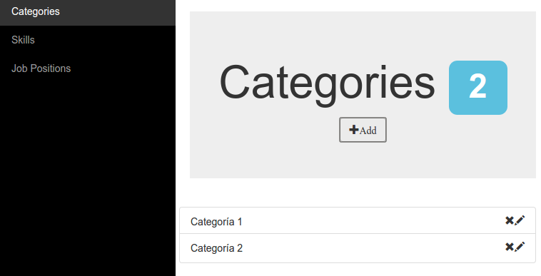
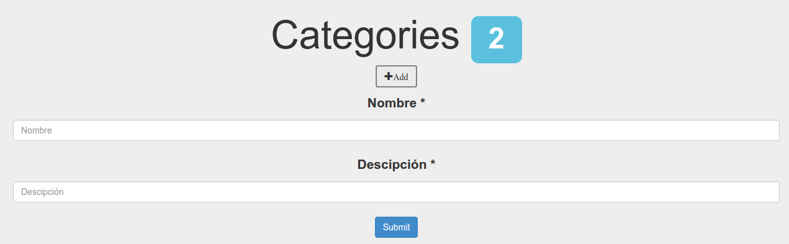
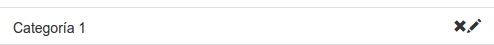
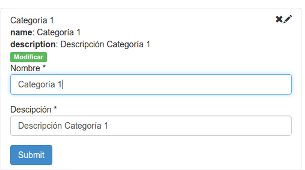

Administración e interfaz gráfica¶
Introducción¶
El Shared Server cuenta con una interfaz gráfica de administración, que es accesible con cualquier navegador desde:
http://URLADMIN/
Donde URLADMIN es la URL que el administrador de sistemas haya configurado. Desde aquí pueden realizarse altas, bajas y modificaciones de Skills, Job Positions y Categories.
Interfaz Gráfica¶
Al ingresar a la URL de administración, se podrá observar una pantalla como la siguiente.
En está se podrá navegar los detalles de cada entrada disponible en la base de datos, como así también editarlas y borrarlas. En el panel de la izquierda (fondo negro), podemos hacer clic en los elementos que queremos ver. En el caso del ejemplo estamos viendo las Categories.
El número en azul muestra la cantidad de elementos totales en la base de datos.
Altas¶
Para desplegar el menu de altas, se debe hacer clic en el botón +Add y se desplegará un menú editable como el que aparece en la figura.
Donde deberá completarse el nombre y la descipción obligatoriamente, para el caso de las Categories. En el caso de los skills y las Job Positions, también debe seleccionarse la categoría correspondiente. Luego se finaliza la creacion con el botón Submit y el elemento aparece en la lista, en la parte central de la pantalla.
Bajas¶
Para eliminar un elemento, solo hay que buscarlo en la lista y selecionar la X. Luego de esto el elemento será eliminado. eAtención: sto no es reversible.
Modificaciones¶
Por último, para modificar un elemento, deberá hacer click en el lapiz o en cualquier parte de la barra (que no sea la X, claramente), como se ve en la imagen de la sección anterior.
Aquí veremos los detalles de nuesta selección y en segundo lugar los campos para modificarlo, luego de la etiqueta en verde. Luego de realizar los cambios necesarios (si los hubiera), podemos hacer clic en el botón azul Submit para guardarlos. Podemos volver a hacer click en el nombre del objeto en la lista para cerrar el menu desplegable sin modificaciones.